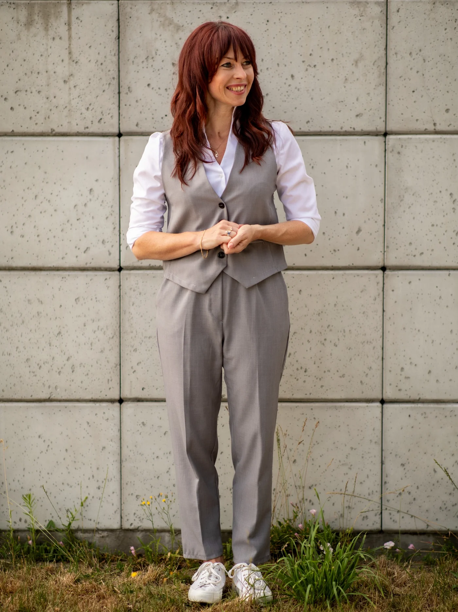

01RESEARCH
Relacyjna sprawczość
Jak sprawczość ucznia i nauczyciela powstaje w relacjach, kulturze uczestnictwa i strukturach dydaktycznych.
agencypartycypacjarelacyjność
PEDAGOGIKA · TEACHER EDUCATION · AGENCY
Badam i projektuję warunki, w których uczeń i nauczyciel mogą działać sprawczo — w relacji, dialogu i odpowiedzialności.
MYŚLENIE
RELACYJNE
“
Sprawczość nie jest samotną zdolnością jednostki. Powstaje pomiędzy — w relacjach, warunkach działania i przestrzeni do współdecydowania.
To perspektywa, która łączy moje badania, kształcenie przyszłych nauczycieli i projekty bliskie praktyce edukacyjnej.
TRZY ŚRODOWISKA
Strona jest budowana jako ekspercki hub łączący naukę, teacher education i praktykę edukacyjną.
Jak sprawczość ucznia i nauczyciela powstaje w relacjach, kulturze uczestnictwa i strukturach dydaktycznych.
Projektowanie środowisk, w których przyszli nauczyciele uczą się przez decyzje, refleksję, badanie praktyki i współpracę.
Wielojęzyczność jako zasób pedagogiczny i translanguaging jako element świadomego projektowania działania nauczyciela.
TEACHER EDUCATION
Interesuje mnie nie tylko to, co przyszły nauczyciel wie, lecz także jak podejmuje decyzje w złożonej sytuacji edukacyjnej: wobec różnorodności, niepewności, technologii i odpowiedzialności za ucznia.
Zobacz projekty ↗WYBRANE PROJEKTY
Rozwijana rama łącząca problematykę sprawczości, relacyjności, uczestnictwa i pedagogicznych warunków działania.
Od wiedzy o wielojęzyczności do świadomego projektowania praktyki dydaktycznej.
Tutorial poświęcony rozwijaniu life skills poprzez dialog, sytuacje decyzyjne i projektowanie aktywności.
Zobacz tutorial ↗Autorski kanał popularyzacji, w którym język naukowy spotyka się z praktyką edukacyjną bez uproszczeń i bez akademickiego dystansu.

PUBLIKACJE
Pełna bibliografia może działać jako osobna podstrona z filtrowaniem i linkami DOI.
Adam Marszałek
Seminare
Problemy Wczesnej Edukacji
Języki Obce w Szkole
O MNIE
Jestem pedagogiem, nauczycielką akademicką i teacher educator. Łączę wieloletnie doświadczenie szkolne z badaniami pedagogicznymi i projektowaniem kształcenia przyszłych nauczycieli.
W pracy naukowej interesują mnie relacje między sprawczością ucznia, działaniem nauczyciela, kulturą dydaktyczną i warunkami instytucjonalnymi. Ważnym polem moich badań są również pedagogical translanguaging, partycypacyjna kultura kształcenia, nauczycielska kompetencja badawcza i close-to-practice research.
PEDAGOGIKA LUDZKIM GŁOSEM
Popularyzuję idee pedagogiczne w sposób dostępny, ale nie uproszczony. Pokazuję, jak badania mogą pomagać nauczycielom rozumieć praktykę i podejmować bardziej świadome decyzje.

WSPÓŁPRACA
Badania · publikacje · teacher education · warsztaty · wystąpienia · projekty międzynarodowe
anna-sarbiewska@wp.pl ↗